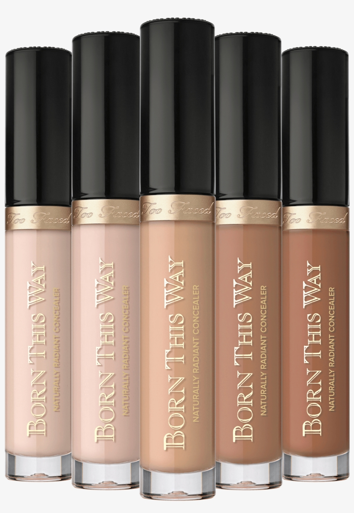

Concealer
Born This Way Super Coverage Concealer

Natural finish that is flawless Weightless, moisturizing, and oil-free formula, Long-lasting for 12 hours, Photogenic with no flashback Non-comedogenic, Infused with Coconut Water, which works to boost skin radiance for a dewy, healthy-looking finish while creating the perfect base for your complexion perfection. Alpine Rose enhances skin look and Hyaluronic Acid for long-lasting moisture Available in 35 natural colors! Precision application using a doe-foot applicatorful coverage, concealment, contouring, highlighting, and retouching
“Disclaimer: THIS IS MY PERSONAL OPINION, EVERYONE HAS DIFFERENT SKIN TEXTURE, SO PRODUCT WORK AND OTHER NOT “